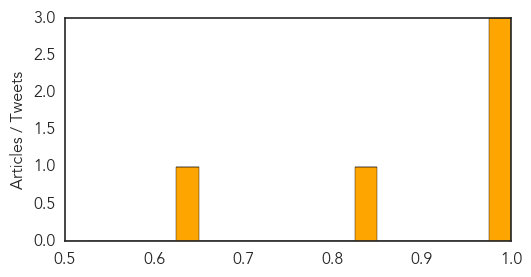
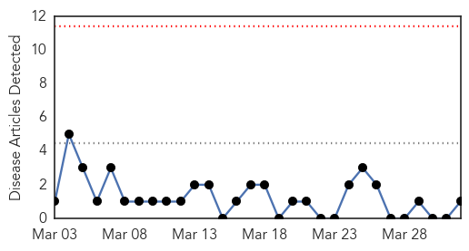
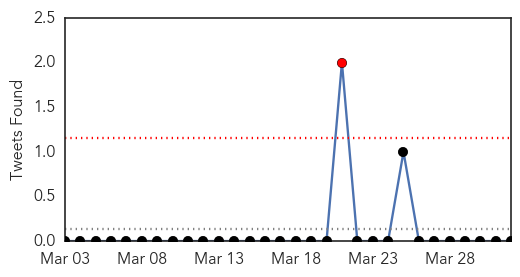
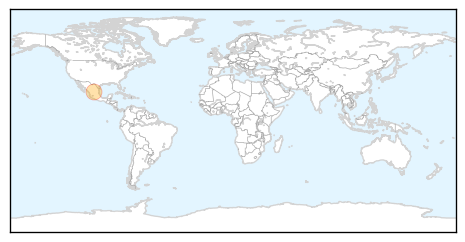

Cholera
30-Day Web Trend
4 alerts, 4 warnings
30-Day Twitter Trend
0 alerts, 0 warnings
Article Locations
Article Confidences
Top Articles:
- 0.997
- Haiti: Senior UN official urges donor community to ramp up efforts to tackle cholera
- 0.997
- Haiti: Senior UN official urges donor community to ramp up efforts to tackle cholera
- 0.996
- Senior UN official urges donor community to ramp up efforts to tackle cholera - Haiti
- 0.842
- Centre begins investigation of suspected cholera outbreak in FCT
- 0.632
- The Whistleblower vs. Mugabe at the UN
Top Tweets:
-
No tweets found for Apr 01, 2014
Swine Flu
30-Day Web Trend
0 alerts, 0 warnings

30-Day Twitter Trend
2 alerts, 0 warnings

Article Locations
Article Confidences

Top Articles:
Top Tweets:
-
No tweets found for Apr 01, 2014